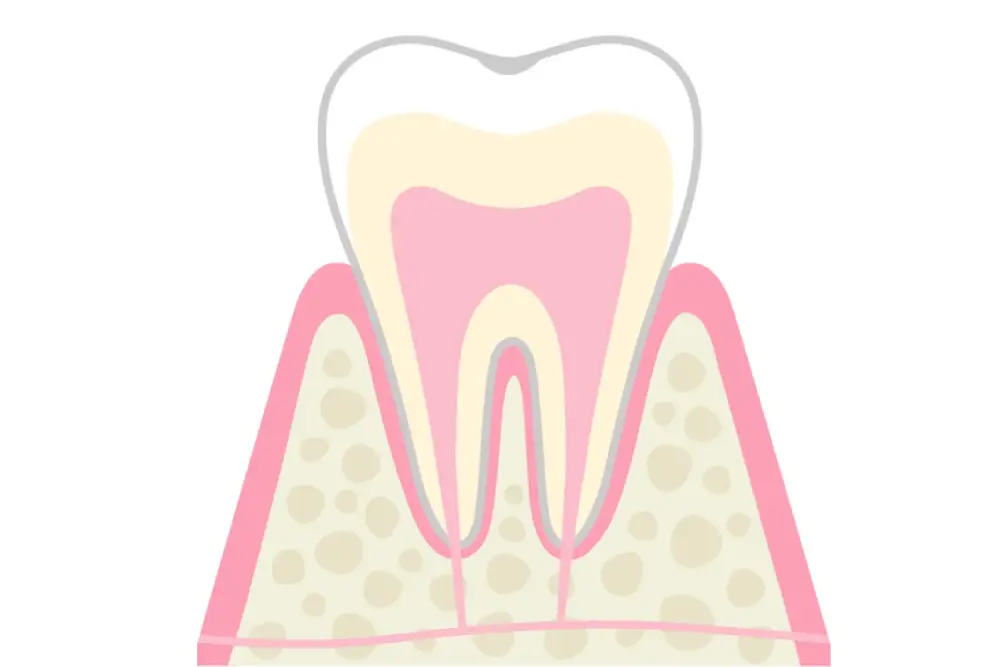
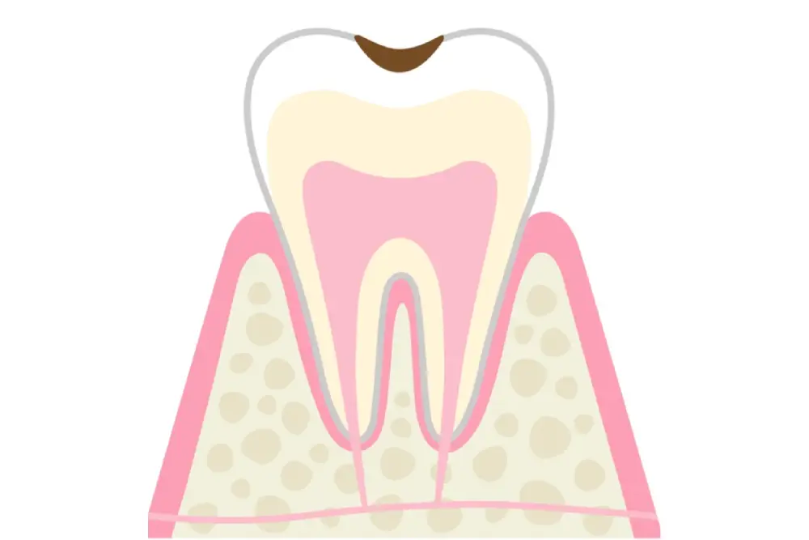
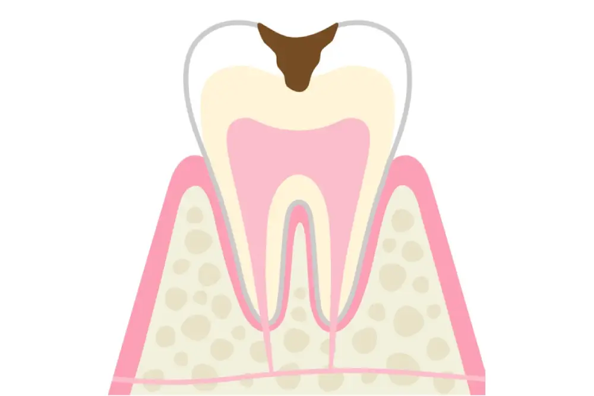
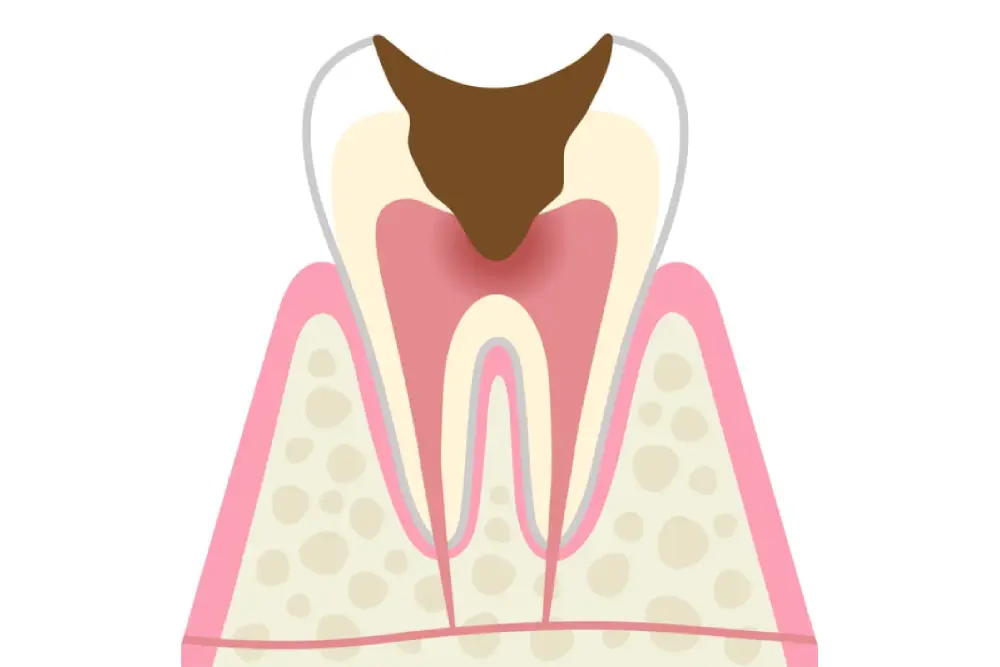
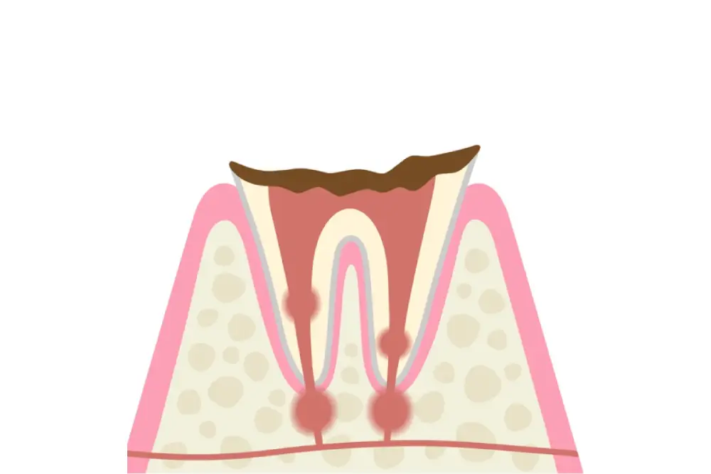

一般歯科
一般歯科とは？
虫歯は、歯垢（プラーク）に含まれている細菌から作り出される酸により、歯が溶かされてしまうことにより発生します。
日本人の9割は、虫歯菌をもっており、常に虫歯の危険にさらされています。 放置していても自然治癒することはありません。
むしろ放置することにより、症状はどんどん悪化していき、進行度によっては神経を取り除いたり、抜歯が必要になるケースも多くなります。
ずっとおいしく食事をしたい、しっかりと発音して会話を楽しみたいのであれば、虫歯は治し、予防することが大事です。
ご自身の歯を守るためにも、早期発見、早期治療が望ましいです。 常日頃より口腔内の健康に気を使い、虫歯になりにくい環境を作ることが大切です。
大切な歯を失ってしまう前に、当医院へお越しください。 当医院では歯をできるだけ削らず、虫歯を治療していきます。
TROUBLE
お悩みはご相談ください
- 歯に違和感を感じる
- 夜眠れないくらい歯が痛い
- 昔治療した歯が痛みだしてきた
- 詰め物が取れたままになっている
- 冷たいものがしみる
- しばらく歯医者さんに行っていない
虫歯の進行度と治療法
C0：初期の虫歯
痛みやしみるなどの症状はありません。
歯の表面に白濁が見られます。
正しいブラッシングと再石灰化を促すことにより、自然治癒が期待できます。

C1：エナメル質の虫歯
歯の表面の虫歯です。 痛みは少なく、変色が見られます。
虫歯になった部分を削り、コンポジットレジンという詰め物を入れます。

C2：象牙質の虫歯
歯の内部に進行した虫歯です。
冷たい物など飲食の際にしみたり、痛みが発生することがあります。
虫歯になった部分を削り、インレー等で保護します。

C3：神経まで進行した虫歯
神経まで到達した虫歯は激しい痛みを伴います。
この状態まで進行すると、神経を取り除く必要があります。
クラウンなどの被せ物を装着します。

C4：歯根まで進行した虫歯
歯の大部分が溶けている状態です。
化膿しており、炎症を起こし激しく痛むことがあります。
抜歯が必要になる場合があります。
入れ歯やブリッジ、インプラント等を行い、歯の機能回復を行います。
